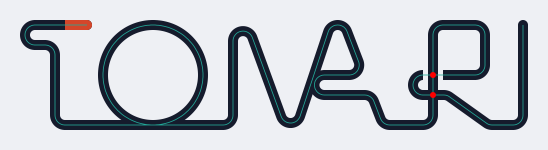

L2 一筆 — 끊기지 않는 한 줄
규칙: 굵기 W 하나·모서리 반경 R=W 하나로 단어 전체를 한 줄로 그린다. 글자들은 바닥의 '철사'로 이어지고, 획 끝이 남는 곳은 W 간격으로 되접히며(혀·머리핀), 교차는 위 가닥 양옆을 0.5W 끊어 매듭으로 보인다. 시작점 2.2W만 주홍.

TONARI

となり

トナリ

TONARI

となり

トナリ
본판 W10굵은 판 W13


굵은 판 W13본판 W10굵은 판 W13
굵은 판 W13

작도: 초록 중심선 하나가 전부다. O는 철사에 접해 구르는 고리, N과 A는 사선 하나를 나눠 쓰는 이웃(벽 한 장), A의 가로대는 오른다리에서 내민 혀가 왼다리에 닿은 것, R의 주머니는 기둥을 한 번 감아(매듭 둘) 다리로 나간다.